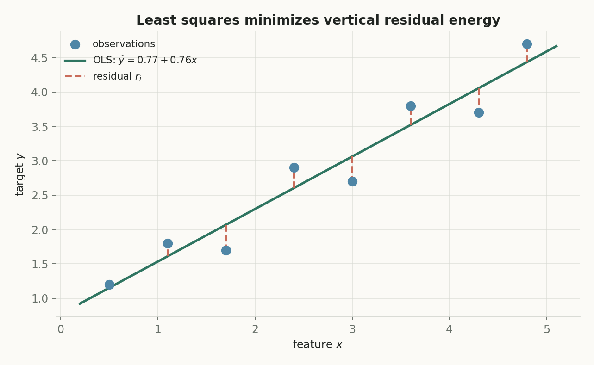
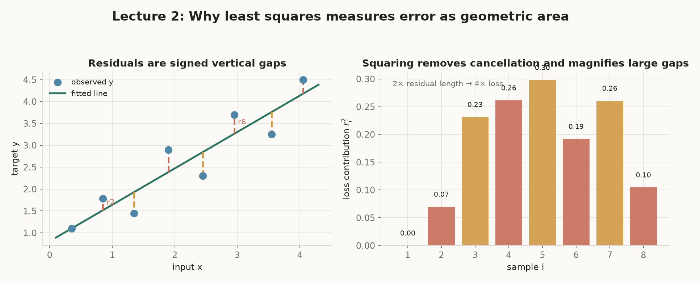
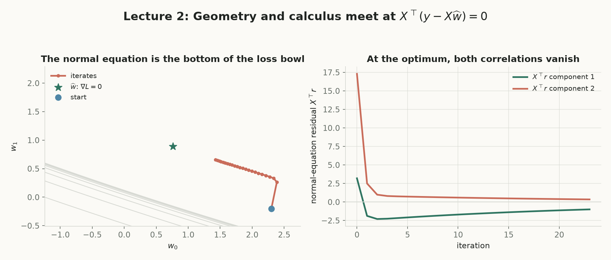
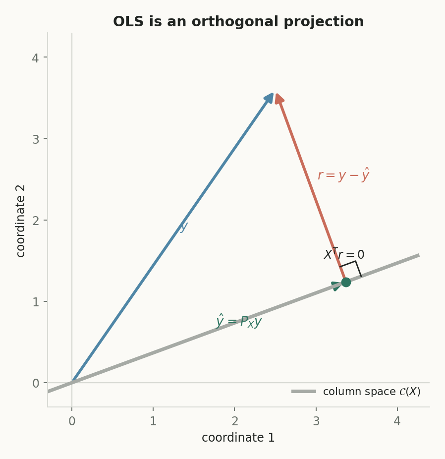
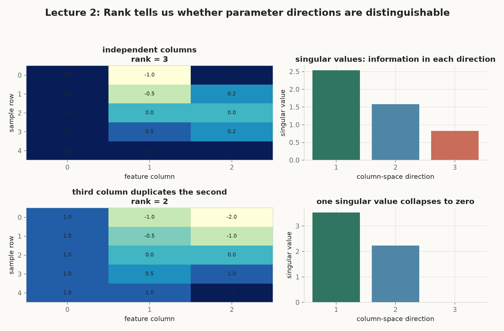

第 2 讲 · 互动附属页
Linear Regression
第 1 讲给出总图：机器学习 = 从数据学一个映射。本讲把这个框架第一次完整走到底——模型是线性函数，损失是平方损失，最优解由正规方程一步给出闭式答案 $\widehat{\mathbf w}=(X^\top X)^{-1}X^\top\mathbf y$，并且这个代数答案恰好是把 $\mathbf y$ 正交投影到列空间的几何操作。第 3 讲将接手本讲留下的两个缺口：直线弯不了就换 feature map，闭式解太贵就上梯度下降。
第一个完整走到底的模型
从卖房估价出发：选直线模型 $f(x)=w_0+w_1x$，用残差 $r_i=y_i-\hat y_i$ 度量单点错误，用平方损失合成总目标 $L$，令梯度为零得到正规方程 $X^\top X\widehat{\mathbf w}=X^\top\mathbf y$，最后用投影几何解释它为什么必然如此。
它是监督学习的最小可复现范式
「选函数类 → 定义损失 → 解优化问题」这三步在 logistic 回归、神经网络里原样重复，只是损失更复杂、闭式解消失。把本讲的每个环节手算一遍，后面所有模型都只是换零件。
y 与 ŷ · w 与 ŵ · 两类下标
$y_i$ 是真实标签，$\hat y_i=f(x_i)$ 是模型预测；$\mathbf w$ 是任意候选参数，$\widehat{\mathbf w}$ 是使损失最小的那一个；下标 $i$ 数样本（$1..n$），下标 $j$ 数特征（$1..d$），两者永不混用。
概念地图：点击节点跳到对应小节
实线是核心路径；紫色节点属于拓展。箭头从方块边界出发，在另一方块边界结束，避免穿过节点。
核心1. 卖房问题：模型、参数与黑板实验
讲义 §1–§3。想给「像我这种房子」估一个平均市场价。只看面积一个属性：$x$ 表示面积（m²），$y$ 表示成交价（百万 CHF）。玩具数据：$(120,1.5),(200,3.0),(130,1.0),(135,0.7),(80,0.7)$。散点图上价格大体随面积上升，于是一条上升直线是合理的猜测。这就是一个回归任务：输出是连续数值，不是类别。
直线模型（两个参数）：$$f_{\mathbf w}(x)=w_0+w_1x,\qquad \mathbf w=(w_0,w_1)^\top$$
$w_0$ 是截距（控制直线上下平移），$w_1$ 是斜率（面积每 +1 m²，预测价 +$w_1$ 百万 CHF）。
机器到底在学什么？模型 = 一条由两个参数控制的直线；训练 = 在函数类里找比较好的参数；预测 = 把新输入代入学到的直线。所有可能的直线组成函数类 $\mathcal F_{\mathrm{lin}}=\{f_{\mathbf w}:f_{\mathbf w}(x)=w_0+w_1x,\ w_0,w_1\in\mathbb R\}$，「最合适」三个字还没定义——那正是损失函数下一节要做的事。
是什么（严谨定义）
线性回归模型把预测写成输入的一次函数：$f_{\mathbf w}(x)=w_0+w_1x$，$\mathbf w\in\mathbb R^2$ 未知、要从数据中学。
白话理解
先承认「面积→价格」大致是一条直线的形状，至于这条线多陡、抬多高，让数据说了算。
干嘛用
把「估价」变成「选两个数」：$w_0,w_1$ 定了，任何新面积 $x_{\mathrm{new}}$ 都能立刻报价 $f(x_{\mathrm{new}})$。
怎么算 / 怎么用
在下面实验 A 里亲手拖 $w_0,w_1$：滑杆动、直线动、每条残差和总损失实时现算，最后点「跳到最优」对比手调与闭式解的差距。
为什么重要 + 前后连接
它把第 1 讲「从数据学映射」落地为可计算对象；「最合适」如何量化 → 下一节残差与损失。
实验 A · 拖线拟合：手动永远差一点
9 个数据点围绕真实趋势生成（fig1 同款风格，可重新随机生成）。拖 $w_0,w_1$ 滑杆移动直线；每个样本的残差 $r_i=y_i-\hat y_i$ 画成带符号的垂直虚线（在线上方 = 低估，在线下方 = 高估），SSE $=\sum_i r_i^2$ 实时现算。觉得调得够好了？点「跳到最优」，动画走到 OLS 解，看你离它差多少。
虚线 = 带符号残差 $r_i$（橙色：$r_i>0$ 低估；蓝色：$r_i<0$ 高估）。跳到最优后绿色虚线为 OLS 解的参考位置。

核心2. 残差、误差抵消与平方损失
讲义 §4–§6。对每个训练样本 $(x_i,y_i)$，模型预测是 $f_{\mathbf w}(x_i)$，真实价是 $y_i$。残差定义为 $r_i=y_i-f_{\mathbf w}(x_i)$：$r_i>0$ 模型低估，$r_i<0$ 高估，$r_i=0$ 刚好穿过。注意 $r_i$ 带符号，是垂直方向的差，不是点到直线的垂直距离。
为什么不能直接把误差加起来？两个房子，一个低估 $0.2$、一个高估 $0.2$，直接相加得 $0.2+(-0.2)=0$——看起来完美，其实错了两次。带符号误差互相抵消，所以 $\sum_i r_i$ 不是合格的损失。候选有：绝对值损失 $|\hat y-y|$、平方损失 $(\hat y-y)^2$、Huber（小误差二次、大误差近似线性）、非对称损失。本讲主角是平方损失。
样本损失与训练损失（本讲约定，无量纲 ½）：$$\ell_i(\mathbf w)=\bigl(y_i-f_{\mathbf w}(x_i)\bigr)^2,\qquad L(\mathbf w)=\frac1n\sum_{i=1}^n\bigl(y_i-f_{\mathbf w}(x_i)\bigr)^2=\frac1n\sum_{i=1}^n r_i^2$$
最小化 $L$ 的方法就是最小二乘；$L$ 又叫训练损失——它只度量训练集上的表现。
是什么（严谨定义）
平方损失把每个残差平方后再平均：$L(\mathbf w)=\frac1n\sum_i r_i^2$。平方消掉符号，$r_i^2\ge 0$，不会正负抵消。
白话理解
每个错误都变成一块正面积，错得越多面积涨得越快（2 倍残差 → 4 倍损失），没人能靠「一正一负」蒙混过关。
干嘛用
把「这条线好不好」变成一个关于 $\mathbf w$ 的普通函数 $L(\mathbf w)$，于是「找最好的线」变成「找函数的最低点」。
怎么算 / 怎么用
实验 B 里对同一组残差现算 $\sum r$、$\sum|r|$、$\sum r^2$ 三条曲线并拖动截距 $b$，直接比较三种合成的行为。
为什么重要 + 前后连接
平方损失处处可微且是二次函数 ⇒ 梯度是线性的 ⇒ 令梯度为零得到线性方程组（正规方程）。这就是后面闭式解存在的根。
实验 B · 损失形状对比：$\sum r$ vs $\sum |r|$ vs $\sum r^2$
固定 4 个样本 $y=(0.2,\,1.0,\,1.3,\,2.1)$，模型只有截距：$\hat y=b$（于是 $r_i=y_i-b$）。拖动 $b$，三条曲线全部由公式现算：$\sum r$ 是斜线（零点只说明「恰好抵消」，不能定位好坏）；$\sum |r|$ 有尖点、不可微，且在中位数区间 $[1.0,1.3]$ 上平坦——最优解不唯一；只有 $\sum r^2$ 光滑、碗状、在均值 $\bar y=1.15$ 处有唯一最低点。
三条曲线在同一坐标系现算；竖虚线 = 当前 $b$；右端标签错开防碰撞。

核心3. 一维手算：一条抛物线的最低点
讲义 §7。极小数据集 $(x_i,y_i)=(1,1),(2,2),(3,2)$，先固定 $w_0=0$，模型只剩 $f_w(x)=wx$，参数只剩标量 $w$。此时 $L(w)$ 是一般记号 $L(\mathbf w)$ 的一维特例：
$$L(w)=\tfrac13\bigl[(1-w)^2+(2-2w)^2+(2-3w)^2\bigr]=\tfrac13\bigl(9-22w+14w^2\bigr)$$
二次项系数 $14/3>0$，开口向上（凸抛物线），唯一的驻点就是全局最小点。求导并令其为零：$$L'(w)=\tfrac13(-22+28w)=0\ \Longrightarrow\ w^\star=\frac{22}{28}=\frac{11}{14}\approx0.7857$$
允许截距时（讲义 §8），$\mathbf w=(w_0,w_1)^\top$ 两维同时找：对第 $i$ 项 $e_i=y_i-w_0-w_1x_i$，链式法则给出 $\partial \ell_i/\partial w_0=-2e_i$、$\partial \ell_i/\partial w_1=-2e_ix_i$；最优处两个偏导同时为零——两个未知数、两个方程，这正是一个线性方程组，第 4 节用矩阵把它写紧。
实验 C · 一维手算复算器
拖 $w$ 滑杆：抛物线、当前点、切线（斜率 $=L'(w)$）全部现算。看 step-box 里三项展开如何逐项相加，以及当前 $w$ 处 $L$、$L'$ 的代入值和「该往哪边走」的判据——$L'(w)<0$ 往右走，$L'(w)>0$ 往左走，$L'(w)=0$ 到底。
抛物线由 $L(w)=\frac13(9-22w+14w^2)$ 现算；切线斜率 $=L'(w)$；竖虚线标记 $w^\star=11/14\approx0.7857$。
核心4. 矩阵写法与正规方程
讲义 §9–§12。多个属性时模型从直线升级为超平面：$f(\mathbf x)=w_0+\sum_{j=1}^d w_jx_j$，系数 $w_j$ 带单位（百万 CHF / 第 $j$ 特征的单位），所以不同特征的系数不能直接比大小。把第 $i$ 个输入向量 $\mathbf x_i^\top$ 放在第 $i$ 行，堆出设计矩阵 $X\in\mathbb R^{n\times d}$（下标 $i$ 数样本、$j$ 数特征），预测向量一步写成 $\hat{\mathbf y}=X\mathbf w$，训练损失写短为 $L(\mathbf w)=\frac1n\|\mathbf y-X\mathbf w\|_2^2$。这里的 $\frac1n$（以及有的教材再加 $\frac12$）只是缩放约定，不改变最优解位置——第 3/4 讲会看到带 $\frac12$ 的版本，结论一致。
是什么（严谨定义）
正规方程：$\nabla L(\mathbf w)=\mathbf 0$ 等价于 $X^\top X\widehat{\mathbf w}=X^\top\mathbf y$。当 $X^\top X$ 可逆，闭式解 $\widehat{\mathbf w}=(X^\top X)^{-1}X^\top\mathbf y$。
白话理解
「往每个参数方向都再没有一阶下降空间」这一句话，翻译成矩阵语言就是一个线性方程组。
干嘛用
不用迭代、不用步长：解一次 $d\times d$ 线性方程组，直接拿到最优参数。
怎么算 / 怎么用
实验 D 把两个 $2\times2$ 级别的正规方程逐元素手算：先算 $X^\top X$、$X^\top\mathbf y$，再解方程。
为什么重要 + 前后连接
它把第 3 节的「求导令零」推广到任意维度；$X^\top X$ 什么时候可逆 → 第 6 节；为什么梯度是线性的 → 因为平方损失是二次的（§17，见第 6 节末）。
逐步推导（链式法则 → 矩阵形）：$$\nabla L(\mathbf w)=\frac1n\sum_i 2\bigl(\mathbf w^\top\mathbf x_i-y_i\bigr)\mathbf x_i=\frac{2}{n}X^\top(X\mathbf w-\mathbf y)=\mathbf 0\ \Longleftrightarrow\ X^\top X\widehat{\mathbf w}=X^\top\mathbf y$$
标量恒等式 $\mathbf a^\top\mathbf b=\mathbf b^\top\mathbf a$ 与分配律是全部工具；$\frac{2}{n}$ 被「$=\mathbf 0$」吃掉，不影响解。
实验 D · 2×2 手算复算器
讲义 §13 与 §14 各一遍。点按钮切换：例 1（无截距）$X=[1;2],\ \mathbf y=[1;3]$；例 2（带截距，截距列全 1）三个样本 $(0,1),(1,2),(2,2)$。step-box 逐元素现算 $X^\top X$ 的每个内积、$X^\top\mathbf y$、行列式与 $2\times2$ 求逆，最后解出 $\widehat{\mathbf w}$ 并在右图画出拟合线。
拟合线与残差由解出的 $\widehat{\mathbf w}$ 现算重画。

核心5. 几何解释：把 y 投影到列空间
讲义 §15。换一个空间看图：$\mathbb R^n$ 的样本输出空间里，一个向量的第 $i$ 个坐标是第 $i$ 套房的（预测）价格。预测向量 $X\mathbf w$ 不能跑遍整个 $\mathbb R^n$，只能在 $X$ 的列空间 $\operatorname{col}(X)=\{X\mathbf w:\mathbf w\in\mathbb R^d\}$ 里移动。所以线性回归 = 在 $\operatorname{col}(X)$ 里找离 $\mathbf y$ 最近的点，而「最近点」就是正交投影。
正交条件 ⇔ 正规方程：$$\widehat{\mathbf r}\perp X\mathbf v\ \ \forall\mathbf v\ \Longleftrightarrow\ X^\top\widehat{\mathbf r}=\mathbf 0\ \Longleftrightarrow\ X^\top(\mathbf y-X\widehat{\mathbf w})=\mathbf 0\ \Longleftrightarrow\ X^\top X\widehat{\mathbf w}=X^\top\mathbf y$$
满列秩时 $\hat{\mathbf y}=X\widehat{\mathbf w}=X(X^\top X)^{-1}X^\top\mathbf y=P_X\mathbf y$，其中 $P_X=X(X^\top X)^{-1}X^\top$ 是到 $\operatorname{col}(X)$ 的投影矩阵。$X^\top\mathbf r$ 的第 $j$ 个分量是残差与第 $j$ 列特征的内积：不为零说明该特征方向还有残差可解释，继续调 $w_j$ 还能降损。
交互 · 拖动 y 看投影（fig4 交互版）
为能画在纸上，取 $n=2$：列空间是 $X=[1;2]$ 张成的直线（沿用实验 D 例 1）。拖动橙色点 $\mathbf y$（或点预设），投影 $\hat{\mathbf y}=P_X\mathbf y$、残差 $\mathbf r=\mathbf y-\hat{\mathbf y}$ 实时现算；右侧读数验证 $X^\top\mathbf r=0$（数值精度内）。直角符号标记垂直。
箭头边界到边界：黑 = $\mathbf y$，绿 = $\hat{\mathbf y}$，橙虚线 = $\mathbf r\perp\operatorname{col}(X)$。

核心6. 解唯一吗：秩、零空间与伪逆
讲义 §16–§17。$X^\top X$ 可逆 ⟺ $X$ 列满秩（列向量线性无关）。若存在非零 $\mathbf z$ 使 $X\mathbf z=\mathbf 0$（$\mathbf z$ 属于零空间），则 $X(\mathbf w+\mathbf z)=X\mathbf w$：沿零空间方向移动参数，训练预测纹丝不动，$\widehat{\mathbf w}$ 不唯一。最常见原因是特征冗余，例如某列是另一列的倍数。即使不可逆，最小二乘解仍存在（投影唯一），伪逆给出其中范数最小者 $\widehat{\mathbf w}_{\min}=X^{+}\mathbf y$。至于为什么平方损失能保证这套代数走得通：它让 $L$ 成为二次函数，梯度线性，令梯度为零就是线性方程组——平方损失 → 二次目标 → 线性正规方程 → 闭式解。
实验 E · 秩的演示：奇异值与两个等优参数
同一 $5\times3$ 设计矩阵的两个版本：A 组三列独立（rank 3），B 组把第三列换成 $-2\times$ 第二列（rank 2）。现算 $X^\top X$、行列式与三个奇异值（对称特征值用 Jacobi 旋转数值求解）。B 组里给出两个不同参数 $\mathbf w_a\neq\mathbf w_b$ 产生完全相同的预测与 SSE——它们相差一个零空间方向 $\mathbf z=(0,2,1)^\top$，因为 $2\mathbf c_2+\mathbf c_3=\mathbf 0$。
柱高 = $X^\top X$ 特征值开方（奇异值），现算；出现 ≈0 的奇异值 ⟺ 列不满秩 ⟺ $\widehat{\mathbf w}$ 不唯一。

拓展7. 其它损失：平方损失不是唯一答案
讲义 §18。平方损失平滑、可微、有闭式解、对大误差惩罚强——但「大误差惩罚强」正是它的软肋：一个离群点的残差被平方后会支配整个损失，把整条线拉向自己。绝对值损失 $|\hat y-y|$ 对离群点稳健（最优截距是中位数而非均值），但不可微、也没有闭式解；Huber 损失取折中：小误差二次、大误差近似线性。非对称损失则承认「高估和低估的代价不同」——损失函数不是数学装饰，它表达什么错误更贵。
实验 F · OLS vs L1：一个离群点的拉力
8 个正常点沿 $y=0.3+0.9x$ 轻微波动，第 9 个点在 $x=1.7$ 处被向下拉。拖「离群强度」滑杆，绿线（OLS，闭式解）与橙线（L1，网格搜索现算使 $\sum|r_i|$ 最小）同步重算。离群越强，OLS 被拽得越狠，L1 几乎不动；右侧读数同时给出两线的 SSE 与 SAE（绝对误差和）。
两条线分别由闭式解与网格搜索现算；终点标签自动错开。
拓展8. 五个误区 + 自测题选讲
讲义 §19 的五个误区，点击卡片核对；自测题先作答再点「显示答案」，答案里的每一步都对应本讲某节的现算实验。
误区（点击展开）
自测（先作答，再点卡片显示答案）
核心收束：模型 → 损失 → 最优解，第一次闭环
残差
$$r_i=y_i-\hat y_i=y_i-f_{\mathbf w}(x_i)$$
平方损失
$$L(\mathbf w)=\frac1n\sum_{i=1}^n r_i^2=\frac1n\|\mathbf y-X\mathbf w\|_2^2$$
正规方程
$$X^\top X\widehat{\mathbf w}=X^\top\mathbf y$$
闭式解（满列秩时）
$$\widehat{\mathbf w}=(X^\top X)^{-1}X^\top\mathbf y$$
投影矩阵
$$P_X=X(X^\top X)^{-1}X^\top,\quad \hat{\mathbf y}=P_X\mathbf y,\quad X^\top\mathbf r=\mathbf 0$$